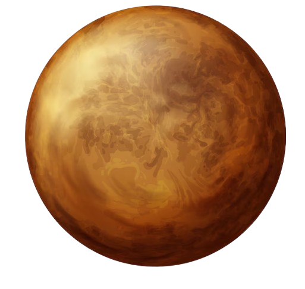

بلوتو هو كوكب قزم يقع في الجزء الخارجي من النظام الشمسي. يُعرف بمداره البيضاوي والطويل حول الشمس، والذي يستغرق حوالي 248 سنة أرضية لإكمال دورة واحدة.
سطح بلوتو يتكون من الجليد والصخور، ويتميز بلونه الرمادي المحمر. يمتلك بلوتو خمسة أقمار، وأكبرها هو "شارون".
